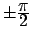
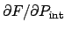
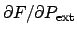

Putting limits (absolute bounds) on the allowed values for a given parameter, causes Minuit to make a non-linear transformation of its own internal parameter values to obtain the (external) parameter values passed to FCN. To understand the adverse effects of limits, see ``The Transformation for Parameters with Limits'' in Chapter 1. Basically, the use of limits should be avoided unless needed to keep the parameter inside a desired range. If parameter limits are needed, in spite of the effects described in Chapter One, then the user should be aware of the following techniques to alleviate problems caused by limits:
If MIGRAD converges normally to a point where no parameter is near one of its limits, then the existence of limits has probably not prevented Minuit from finding the right minimum. On the other hand, if one or more parameters is near its limit at the minimum, this may be because the true minimum is indeed at a limit, or it may be because the minimizer has become ``blocked'' at a limit. This may normally happen only if the parameter is so close to a limit (internal value at an odd multiple of  that Minuit prints a warning to this effect when it prints the parameter values.
The minimizer can become blocked at a limit, because at a limit the derivative seen by the minimizer  is zero no matter what the real derivative  is.
For a stepping method (like SIMPLEX) this seldom poses any problem, but a method based on derivatives (MIGRAD) may become blocked at such a value. If this happens, it may be necessary to move the value of the parameter in question a significant distance from the limit (with SET PARam) and restart the minimization, perhaps with that parameter fixed temporarily. We are investigating ways to induce Minuit to extricate itself from such situations automatically, but it is not so obvious as it seems, and for the moment must sometimes be done by hand.
In the best case, where the minimum is far from any limits, Minuit will correctly transform the error matrix, and the parameter errors it reports should be accurate and very close to those you would have got without limits. In other cases (which should be more common, since otherwise you wouldn't need limits), the very meaning of parameter errors becomes problematic. Mathematically, since the limit is an absolute constraint on the parameter, a parameter at its limit has no error, at least in one direction. The error matrix, which can assign only symmetric errors, then becomes essentially meaningless. On the other hand, the MINOS analysis is still meaningful, at least in principle, as long as MIGRAD (which is called internally by MINOS) does not get blocked at a limit. Unfortunately, the user has no control over this aspect of the MINOS calculation, although it is possible to get enough printout from the MINOS command to be able to determine whether the results are reliable or not.